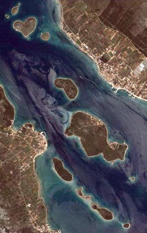
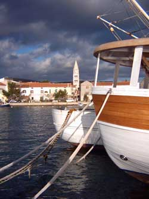

Turanj je idilično primorsko mjesto sa nešto više od 1200 stanovnika. Nalazi se na vrlo lijepom položaju u Pašmanskom kanalu i okružuje ga mali arhipelag sa 15 otočića. Prostire se uz otprilike 4 kilometra obale, a kroz mjesto prolazi i Jadranska magistrala što ga čini prometno lako dostupnim. U blizini su gradovi Biograd i Zadar, tako da je Turanj atraktivno i mirno primorsko mjesto koje je ipak blizu središta regije.
U ljetno doba Turanj postaje pravi mali raj. Sa svojim čistim i toplim morem i mnoštvom otočića jednostavno privlači ljude. Veliki broj stranih i domaćih turista nakon što jednom posjeti Turanj ne može odoljeti opuštenoj i mirnoj atmosferi Turnja, i svakog ljeta se vraćaju. I nautičari koji su se navikli na ljepote Kornata i kojima su dostupni svi otoci Jadranskog mora znaju za ljepote Pašmanskog kanala u kojem su nevere tiše, vjetrovi i valovi slabiji, more toplije, a plovidba između otočića ugodna i opuštajuća. Tada je najveći gušt usidriti se u uvali nekog od otoka i uživati u zalasku sunca.
Kroz jesen i zimu se atmosfera mijenja, kao u pjesmi: ništa nova, ništa nova - poslin fešte kisne vala... Bure su u Turnju prilično jake i oštre, i iako su zimske temperature većinom iznad nule, zime znaju biti vrlo hladne. Ali i zima u Turnju, kao i u svakom primorskom mjestu ima svojih čari. Za vrijeme bure je najljepše sjesti negdje u zavjetrinu i uživati u suncu i pogledu na more koje zbog refula bure naglo i nepredvidivo mijenja boje iz svijetloplave u sivu i crnu.
Područje Turnja bilo je naseljeno od brončanog doba, a prvi arheološki tragovi potječu još iz mlađeg kamenog doba. U brončano doba su bile naseljene "gradine" na brdima oko Turnja i jedna na otočiću Ričulu (Zeleni školj) na kojem se je kasnije nalazila i antička lučica. U to doba je otočić još bio spojen sa kopnom. Prvo naselje se zvalo Tukljača (Tukljačane, Tuklječane), a u rimsko doba su se tu nalazile tri lučice i veliko rimsko imanje. Tukljača je u to vrijeme bila samostalna župa, a iz tog vremena su sačuvane tri crkvene knjige na glagoljici i dva povijesno važna glagoljaška kamena natpisa. Sačuvan je i dio antičkog vodovoda Biba - Jader. Na mjesnom groblju se nalazi crkvica koja je 845. godine podignuta na ostacima rimske ville rustice, a koja se u povijesnim ispravama naziva crkva Neoskvrnjenog začeća ili Sv. Marija, a u nekim spisima i Stella maris.
Sadašnji Turanj se u povijesnim ispravama prvi put spominje u XIII. stoljeću, a 1444. godine je u Turnju sagrađena utvrda hrvatskih plemića Meštrovića. Po toj kuli je Turanj dobio ime Toretta (prema latinskom turis - toranj, kula) koje je s vremenom dobilo današnji oblik. Utvrda je bila sagrađena tik uz more, a zidine su podupirale tri kule. Iz tog vremena je ostala sačuvana jedna kula (Kaštel), glavna vrata i dio bedema. Turanj je za vrijeme Kandijskog rata bio carinarnica, a inače je kroz povijest poznat kao megdanište na kojem su se odvile mnoge bitke. U to doba je dio stanovništva bio sklonjen na obližnje otoke Pašman i Babac, a Turanj su jednom prilikom Mlečani zapalili da ne bi pao u turske ruke.
Unutar Turanjskih zidina je 1450. sagrađena crkva kojoj je zaštitnica bila Mala Gospa ili Ružarica. Tu crkvu je za vrijeme Kandijskog rata srušio i zapalio Ibrahim paša, a na njenom mjestu je 1675. sagrađena sadašnja župna crkva Gospe Karmelske. Inače, stari Turanjci su svoje mrtve ukopavali u franjevačkoj crkvi Sv. Dujma na otoku Pašmanu. Samo kad bi more bilo nemirno ukopi su se vršili u Tukljači. Zanimljiva je činjenica da je 1527. godine Turanj imao 144 stanovnika, dok je u isto vrijeme u Biogradu živjelo 70 stanovnika.